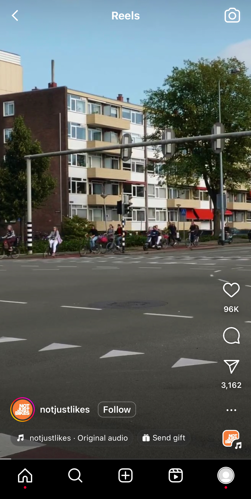

Introduction
Despite short-form video content’s dramatic rise in popularity among today’s youth, it has largely failed to make its way into the classroom as a part of course content. As teachers look for new ways to appeal to an increasingly-online generation of students, knowing the techniques behind successful short form content may be key to designing content that is accessible, understandable, and efficient for students to use in their classes. This study focuses primarily on the strategies used by successful, educational short-form videos on Instagram using the Reels feature. Information about these videos was recorded to better understand the practices used by these creators that seem to drive the most popularity, so that educators could begin to employ those strategies in their own courses down the line. While limited by Instagram’s lack of research-dedicated search features as well as the absence of web crawlers suitable for video assessment, the data collected showed trends that persist across multiple fields of study.

To begin, an overview of the Reels video player is necessary. The image to the right shows a standard layout of a Reel. At the very bottom of the window is Instagram’s navigation buttons, that include buttons to go to the home page, search/recommended page, making a post, watching Reels, and viewing your profile. A scrubber is sometimes visible directly above these navigation features and before the on-screen elements.
Above that, the creator’s name is visible along with their profile picture and a follow button. Below that is the audio used in the reel as well as other links that the creator might want to include (in this case, a donation link). Along the right side of the screen is a like button, comment button, share button, a hamburger menu for more advanced options like saving the post or adjusting content settings, along with a second button that links to the audio used in the reel. At the very top of the screen is a back button, a Reels logo, and a button to open your phone’s camera. None of the on-screen elements can be hidden, and all remain visible as the video plays.
This layout mimics that of TikTok, YouTube Shorts, and other sites that have implemented such short-form content into their platforms. Understanding this layout sets the stage for the study’s discussion of this format’s potential for classroom usage to be explained in the methods section.